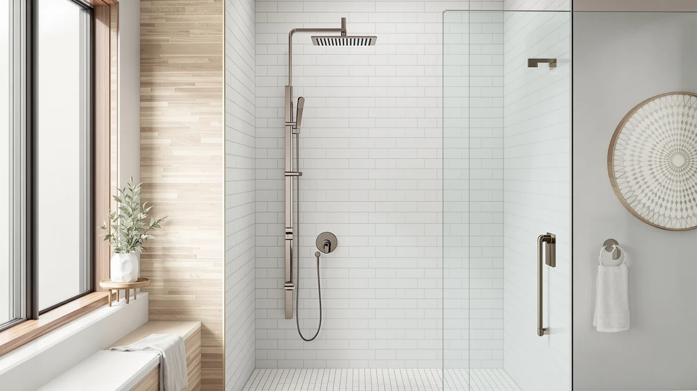

Do Shower Panels Need High Water Pressure? (2026)
Prices and picks verified as of September 2026. Independent, reader-supported reviews.


Things to Know Before You Buy
- Most residential water pressure sits between 40 and 60 psi, and shower panels with a single rainfall head work fine anywhere in that range.
- Panels with six or more body jets need at least 40 psi at the valve to run every function together without a noticeable drop in each spray.
- Low-flow fixtures elsewhere in the house, a worn pressure regulator, or galvanized supply lines can all quietly reduce the pressure reaching your shower panel.
- Mineral buildup inside the jets is a far more common cause of weak spray than actual low water pressure, so descaling should be your first troubleshooting step.
Do shower panels need high water pressure to run the way the box promises? Not necessarily, but the answer depends heavily on how many functions you plan to run together. A single rainfall head runs fine on the same pressure that feeds a standard showerhead, while a tower with six or eight body jets plus a rain head and handheld sprayer needs closer to 50 psi before every function delivers a real spray instead of a trickle. Your home's actual pressure, not the marketing copy on the product page, decides which panel makes sense for your bathroom.
Most US homes run between 45 and 60 psi at the shower valve, which comfortably covers the panels in this guide. Problems tend to show up in older houses with galvanized pipe, homes fed by a well with a weak pump, or top-floor units in a multi-story building where pressure drops the farther water travels from the main line. If you've never measured your pressure, a $10 gauge that threads onto an outdoor spigot gives you a reliable number in under a minute, and it's worth checking before you commit to a panel with a lot of simultaneous jets.
This guide breaks down what water pressure actually does inside a shower panel, which styles hold up better on weaker supply lines, and the mistakes that make a perfectly good panel feel underpowered after installation. We also cover the maintenance habits that keep pressure from dropping over time, since a clogged jet often gets blamed on the plumbing when the fix is a five-minute descale.
What You Need to Know
Water pressure inside a home is measured in pounds per square inch, or psi, and it reflects how forcefully water moves through your pipes rather than how much volume comes out over time. A shower panel pulls from the same supply line as your old showerhead, so it never receives more pressure than your plumbing already delivers. Whether do shower panels need high water pressure comes down to how many outlets you're asking that single line to feed at once.
A basic rainfall panel with one shower head places roughly the same demand on your plumbing as a standard fixture, and it performs well down to about 30 psi. Add a handheld sprayer and you're splitting the same supply two ways, though most people don't run both at once. Add four, six, or eight body jets that fire simultaneously with the rain head, and you've divided one water source across many outlets, so the pressure at each individual jet drops sharply if the incoming supply isn't strong enough.
Utility companies in the US typically deliver municipal water between 45 and 80 psi to the property line, then internal plumbing, elevation, and fixture wear reduce that number by the time it reaches your shower valve. A two-story home can lose several psi from water traveling upward to a second-floor bathroom alone. None of this means you need a booster pump before buying a panel. It means matching the panel's jet count to the pressure you actually have, which is the single biggest factor in whether a shower panel feels powerful or disappointing.
Types and Categories
Shower panels fall into a few broad categories, and pressure sensitivity varies a lot between them. Single-function rainfall panels are the simplest style, delivering one wide spray pattern through an overhead head, and they tolerate low water pressure about as well as a standard showerhead does. These are the safest choice for homes on well water or older buildings with known pressure issues.
Multi-function towers with a rain head, a handheld wand, and two to four body jets sit in the middle of the category. Reviewers consistently note that these hold up fine on typical municipal pressure, since you rarely run every jet at full blast simultaneously, and most units let you select which outlets are active at a given time.
High-jet towers, the ones advertising six or eight body sprays plus a rainfall head and LED lighting, sit at the demanding end. These systems are built for bathrooms with strong, consistent pressure, and owners on weaker supply lines often report that only two or three of the jets deliver a real spray while the rest sputter. RV and camper shower panels form a separate category entirely, built around the lower pressure typical of onboard water pumps, and they're deliberately designed to perform with less flow than a residential system provides.
Matching the category to your home's pressure matters more than matching it to your bathroom's style. A panel with fewer, well-chosen functions on a weak supply line will outperform an eight-jet tower that never runs at full strength.
How to Choose
Start by measuring your actual water pressure instead of guessing. A pressure gauge that threads onto an outdoor hose spigot costs about ten dollars and gives you a psi reading in under a minute. Run the test with no other fixtures in use, since a dishwasher or washing machine running at the same time will pull the number down temporarily.
Once you know your number, match it to the panel's function count. Under 35 psi, stick to a single rainfall head or a two-function panel with a handheld wand. Between 40 and 60 psi, most four to six-jet towers perform well, though you may notice a modest drop when every jet runs together. Above 60 psi, an eight-jet panel with LED lighting and a rain head can run every function at full strength without competing for flow.
Check the plumbing behind your wall before you check the panel's spec sheet. A single half-inch supply line feeding a tower with eight simultaneous outlets divides that flow eight ways no matter how strong your municipal pressure is. If your bathroom was plumbed decades ago with narrower pipe, upgrading the supply line does more for shower performance than buying a higher-end panel.
Consider how you actually shower, too. If you tend to use one or two functions at a time rather than running everything together, a high-jet tower can work well even on moderate pressure, since you're never demanding its full output at once. If you like every jet running simultaneously for a full-body rinse, buy for your lowest measured pressure, not your highest hope.
Favor panels with individually adjustable jets and shutoff valves for the outlets you won't use every day. Being able to close off two or three jets concentrates the available pressure into the ones you actually want running, which matters more on a moderate supply line than any spec printed on the box.
Common Mistakes to Avoid
Buying an eight-jet tower without checking your home's pressure first is the mistake that generates the most disappointed reviews. A panel that looks identical in every marketing photo can feel completely different depending on what's behind your wall, and no amount of installation care fixes a mismatch between the panel's demand and your supply line's capacity.
Blaming low pressure for a problem that's actually a clogged jet is nearly as common. Hard water leaves mineral deposits inside the small nozzles on rain heads and body jets within months in many parts of the country, and that buildup restricts flow in a way that mimics low water pressure closely. Descale the jets before you assume your plumbing is at fault.
Ignoring the pressure rating on the shower valve itself trips people up during installation. Some panels require a minimum incoming pressure to open their internal valve fully, and installing one below that threshold leaves the valve partially closed even when your home's pressure would otherwise be adequate.
Skipping a pressure-balancing or thermostatic valve is another overlooked mistake, especially in a household where someone might run a washing machine or another shower at the same time. Without one, a sudden pressure change elsewhere in the house can send a burst of cold or scalding water through the panel.
Don't install a booster pump as a first response. Test your pressure, descale existing fixtures, and check for a stuck or undersized regulator before spending money on equipment you may not need.
Care and Maintenance
Regular cleaning keeps the pressure you already have from silently declining. Mineral scale builds up inside rain head nozzles and body jets over time, and in areas with hard water, that buildup can cut effective flow noticeably within a year of installation. Soak the removable shower head and handheld wand in a half vinegar, half water solution for 30 to 60 minutes every month or two, then scrub the nozzle holes with an old toothbrush to clear anything the soak loosened.
Body jets that are fixed to the panel and can't be removed for soaking benefit from a vinegar-soaked cloth wrapped around each nozzle for the same amount of time. Rinse thoroughly afterward so no residue sits against the metal or plastic finish.
Check the inline filter screen where the supply hose connects to the panel every few months. This small mesh screen catches sediment before it reaches the jets, and it's often the true cause of a panel that seems weaker than when it was new. Unscrew the connection, remove the screen, rinse it under a strong tap, and reinstall it.
Wipe down the panel's exterior finish, whether it's stainless steel, brushed nickel, or matte black, with a soft cloth after each use to prevent water spotting and mineral haze. Avoid abrasive scrubbers or bleach-based cleaners, since both can dull the finish and, on stainless surfaces, encourage pitting over time.
Our Top Picks
If you'd rather skip the pressure math and go straight to a panel that performs well across most home water pressures, these three towers cover a range of budgets and jet counts.

Editor’s Pick
ELLO&ALLO LED Shower Panel Tower
This tower pairs a wide rainfall head with a mist setting and body jets, and reviewers note it performs consistently on typical municipal pressure without needing every jet maxed out to feel strong. The LED lighting and handheld sprayer round out a system that works well for most bathrooms without demanding an unusually high supply line.
$239.99
Check Price on Amazon
Best Value
PF Shower Panel Tower Adjustable
The adjustable brass shower arm lets you angle the wide rain head to concentrate spray where you want it, which helps compensate for moderate pressure instead of spreading flow thin across the full width. Its six body jets are a manageable count for most residential supply lines, making it a practical pick if your home doesn't test especially high on a pressure gauge.
$239.99
Check Price on Amazon
Premium Choice
Greenspring Shower Panel - Adjustable
With eight body massage jets and an adjustable rainfall head, this is the highest-demand panel of the three, and it's the one that benefits most from confirming your home clears at least 40 psi before you buy. On adequate pressure, owners describe the stainless steel and glass build as sturdy enough to justify the higher jet count.
$239.99
Check Price on AmazonFrequently Asked Questions
Do shower panels need high water pressure to work at all?
No. A single-function rainfall panel performs fine on the same pressure that runs a standard showerhead, typically as low as 30 psi. High water pressure only becomes necessary once you're running several body jets and a rain head at the same time.
What water pressure do I need for a multi-jet shower panel?
Most four to eight-jet towers are designed around 40 to 80 psi at the shower valve. Below 35 psi, expect the outer jets to deliver noticeably less spray than the rain head, especially when every function runs together.
How do I check my home's water pressure before buying a panel?
Thread a pressure gauge, available for about ten dollars, onto an outdoor spigot and turn the water on fully with no other fixtures running. The reading in psi tells you which panel category fits your home before you spend money on one that won't perform.
Can low water pressure damage a shower panel?
Low pressure itself won't damage a panel, but it can leave the internal valve partially closed on models with a minimum pressure requirement, which sometimes gets mistaken for a defective unit. Check the manufacturer's minimum psi rating before installation rather than after.
Will a pressure-boosting pump fix a weak shower panel?
Sometimes, but only after you've ruled out clogged jets, a dirty inline filter, or an undersized supply line, since a booster pump won't fix any of those underlying issues. Descale the fixture and check the filter screen first, since that resolves more weak-spray complaints than a pump does.
Verdict
Do shower panels need high water pressure? Only the ones asking a lot of a single supply line at once. A basic rainfall panel tolerates the same modest pressure that runs any standard showerhead, while a tower with six or eight simultaneous body jets needs a stronger, more consistent supply to deliver on its spec sheet. The fix isn't guesswork: measure your home's psi with a ten-dollar gauge, match that number to a panel's jet count, and check the inline filter and jets for mineral buildup before you blame your plumbing for weak spray.
For most households, a panel like the ELLO&ALLO LED Shower Panel Tower hits a practical middle ground, combining a strong rain head with body jets that don't overwhelm a typical residential supply line. If your home tests below 35 psi, lean toward fewer, well-chosen functions rather than a high-jet system that will never run at full strength. Buy for the pressure you actually have, and any shower panel on this list will perform the way it's supposed to.